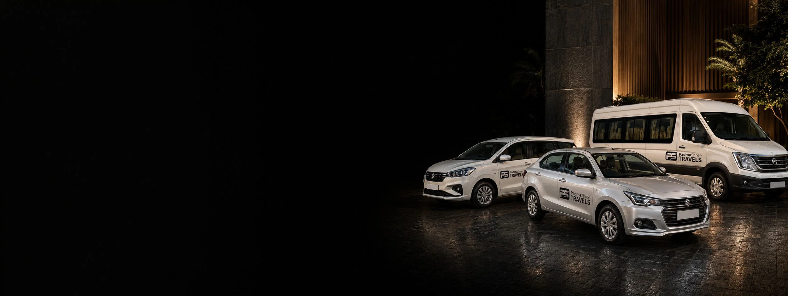

Agra To Tundla Junction Taxi₹2,000 Round Trip · AC Sedan
35 KM · About 45 Minutes
Delhi–Howrah Main Line

Forty-Five Minutes, And A Train That Will Not Wait
Tundla Junction sits on the Delhi–Howrah main line about 35 km east of Agra, and a great many express trains that matter to Agra travellers stop there. The drive is short and simple. The part that actually matters is that the car arrives when it said it would — which is why we send you the driver’s name, number and registration before pickup rather than after.
Agra To Tundla Junction Taxi At A Glance
~35 KM
From Agra, Via NH-19
~45 MIN
Each Way
₹2,000
Round Trip, AC Sedan
24/7
Including Early Mornings
Agra To Tundla Junction Taxi Fare
₹2,000 is the round trip in an AC sedan. Larger cabs, and a one-way drop if that is all you need, are quoted on WhatsApp.
| Cab Type | Seats | Round Trip |
|---|---|---|
| AC Sedan (Dzire / Amaze) | 4 | ₹2,000 |
| AC SUV (Ertiga) | 6 | Fare on WhatsApp |
| AC SUV (Innova Crysta) | 7 | Fare on WhatsApp |
| Tempo Traveller | 12–15 | Fare on WhatsApp |
Fares cover fuel and driver charges. Tolls and parking are paid by you at actuals. Your fare is confirmed in writing before travel, including for early-morning or late-night pickup requests. The ₹2,000 is quoted as a round trip, so the return leg is part of it — if you only need a one-way drop to catch a train, say so when booking and we will quote that instead. We confirm the final figure in writing before you travel. See the full Agra taxi fare list for every other route.
Making The Train
- Send your train number and departure time when you book. We plan the pickup backwards from it rather than from a guess.
- The drive is about 45 minutes over roughly 35 km of NH-19 — but book a sensible buffer on top. We would rather you waited on the platform than in the car.
- Driver name, number and car registration come through before pickup, so you are not standing outside at 4 AM wondering whether a car is coming.
- Fare confirmed in writing before travel, including for early-morning or late-night pickup requests.
- Drop at Tundla Junction or anywhere in town — tell us which when booking.

4 AM RunsWho Books This Transfer
Catching A Train Agra Does Not Get
Tundla Junction is on the Delhi–Howrah main line and carries express services that are worth the 45-minute drive out. For a lot of journeys it is simply the more practical station.
Arriving At Tundla, Late
Trains reach Tundla at hours when finding a ride is hardest. We run around the clock, so a booked pickup is waiting rather than something you go looking for after you step off.
Families With Luggage
A station transfer with bags and children is not a shared-transport job. A sedan seats four with boot space; Ertiga, Innova and Tempo Traveller are available for larger groups.
 35 KM Of NH-19
35 KM Of NH-19
Or Start From The Station In Agra
If your journey begins at Agra Cantt, Agra Fort or Raja Ki Mandi instead, our Agra railway station taxi page covers those transfers.
Clear Fare Breakdown
What The ₹2,000 Covers
The sedan station transfer, and what sits outside it.
Included In The Fare
- Private AC Cab, Agra To Tundla Junction And Back
- Fuel And Driver Charges
- Pickup At Any Hour, Fare Confirmed In Writing
- Door-To-Door Agra Pickup
- Drop At The Junction Or Anywhere In Tundla
- Driver Name, Number And Car Number Before Pickup
Paid Separately By You
- Tolls, At Actuals
- Station Parking
- Platform Tickets And Porters
- A Second Day’s Pickup, If You Return Later
Why Book This Transfer With Us
Bookings That Do Not Get Cancelled
One customer told us he switched after an app driver cancelled on him minutes before an airport run, and now uses us for station runs because the driver shows up. On this route that is the entire product.
You Know The Car Before It Arrives
Name, mobile number and registration sent ahead of pickup. Match the plate and go — useful at an hour when you would rather not be checking anything.
A Price You Can See
₹2,000 for the sedan transfer is published here and on our fare list, and confirmed in writing before you travel.
Fare Agreed Before You Travel
Your fare is confirmed in writing before travel, including for early-morning or late-night pickup requests.
Planned Around Your Train
Give us the train number and departure time and the pickup is set from that — with a buffer, because 45 minutes is the drive, not the plan.
Same-Day Bookings
Usually possible, and confirmed within minutes on WhatsApp. No advance payment for most bookings.
How Booking Works
01 — Send Your Train Details
Travel date, pickup address in Agra, your train number and departure time, how many of you there are, and whether you need a return leg.
02 — Fixed Fare Confirmed
Confirmed in writing on WhatsApp, with the expected toll stated separately, so the full cost is clear before you agree.
03 — Driver Details Shared
Name, mobile number and car registration number before pickup — match the plate before boarding. No advance for most bookings.
Local Agra Operator
Your Local Travel Partner In Agra
Padma Shree Travels operates from Shamsabad, Agra, running local sightseeing, station and airport transfers, pilgrimage trips and outstation routes. Every outstation route we run is listed on the outstation cabs hub.
- Your fare Fares are confirmed on WhatsApp before you travel, with the expected toll identified separately.
- Your driver Your driver’s name, mobile number and car registration number are shared before pickup.
- Pickup and drop Pickup from any Agra address — hotel, home, Agra Cantt, Agra Fort station or Kheria Airport.
Direct WhatsApp and phone support before and during your trip.
.jpg)
Agra To Tundla — Questions & Answers
How far is Tundla Junction from Agra?
About 35 km on NH-19, roughly a 45-minute drive. A round trip covers 70 to 100 km depending on your pickup point and any local movement in Tundla.
What is the fare from Agra to Tundla?
₹2,000 for the station transfer in an AC sedan, covering fuel and driver charges. Tolls and parking are paid by you at actuals. Ertiga, Innova Crysta and Tempo Traveller are quoted on WhatsApp. The ₹2,000 is quoted as a round trip, so a return leg is included rather than extra. If you only need a one-way drop to catch a train — which is the common case on this route — say so when booking and we will quote that instead.
Why do people travel to Tundla instead of Agra Cantt?
Tundla Junction is a major junction on the Delhi–Howrah main line, and a number of express trains that matter to travellers from Agra stop there. For some journeys it is simply the more practical station, and 45 minutes in a car is a small price for a better train.
Do you do early-morning drops?
Yes. We run 24 hours a day, every day of the year including holidays and festivals, and early-morning train drops are one of the most common bookings on this route. Your fare is confirmed in writing before travel, including for early-morning or late-night pickup requests.
How do you make sure I catch my train?
You give us the train number and departure time, and we plan the pickup backwards from it with a buffer built in. We do not track trains and we cannot control the traffic, so we would rather set off early and have you waiting on the platform than cut it fine. Your driver’s details reach you before pickup so you can confirm the car is on its way.
Can you pick me up from Tundla when my train arrives?
Yes. Give us your train number and expected arrival time when booking and the driver will be at the station. Trains reach Tundla at some awkward hours, which is exactly when a booked cab is worth more than a hoped-for one.
Can I book at short notice?
Usually, yes — same-day bookings are normally possible and we confirm within minutes on WhatsApp. For a very early departure or a larger vehicle, a day’s notice makes it certain. No advance payment is needed for most bookings.
Where exactly will the driver drop us?
At Tundla Junction station, or any address in the town — tell us which when you book. Station parking is paid at actuals, as are platform tickets and porters if you use them.
Other Transfers And Routes
Agra Railway Station Taxi
Agra Cantt, Agra Fort and Raja Ki Mandi transfers.
From ₹800Agra Airport Taxi
Kheria Airport pickups and drops, any hour.
Airport transferAgra to Firozabad Taxi
The glass bangle city, 40 km east on the same highway.
₹2,500 round tripAgra to Etawah Taxi
150–175 km east, mostly on the expressway.
₹3,500 round tripAll Outstation Cabs from Agra
Every outstation route we run, in one place.
View routesFull Agra Taxi Fare List
Every route and package we run, with fares in one table.
All faresTundla Junction, ₹2,000
Fare confirmed in writing. Driver details before pickup.
Send your train number, departure time and Agra pickup address — we set the pickup from your train and confirm the fare in writing.